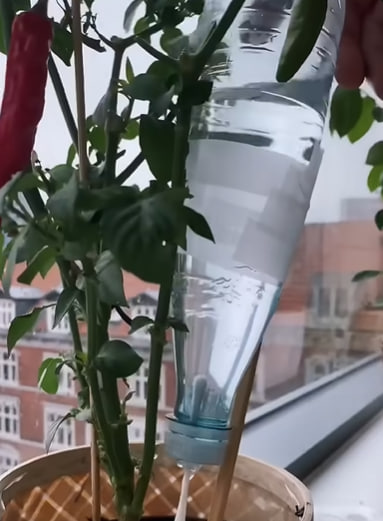

How this product helps
This simple DIY drip system is a powerful tool for water conservation and waste reduction, turning common household items into a practical solution that benefits both your plants and the planet.
- Prepare the Bottle Cap: Take the plastic bottle cap. Carefully make a small hole in the very center of the cap. The hole should be just large enough for the plastic stick of the Q-tip to fit snugly through.
- Insert the Q-Tip: Push the plastic stick part of the Q-tip through the hole in the bottle cap from the inside out, so that the cotton ends are on either side of the cap (one inside, one outside). Adjust it so the cotton on the outside is long enough to reach the soil.
- Attach the Stick: Place the stick alongside the plastic bottle. Use tape to securely attach the stick to the bottle, running from the neck down to the bottom. The stick should extend well beyond the bottle's bottom, creating a pointed end that will go into the soil. This provides stability when the bottle is upside down.
- Fill with Water: Fill the plastic bottle with water.
- Screw on the Cap: Screw the cap (with the Q-tip inserted) tightly onto the bottle.
- Position in Plant Pot: Carefully invert the bottle so the cap (and the cotton end of the Q-tip) is facing down. Stick the pointed end of the attached stick firmly into the soil next to your plant. Ensure the cotton end of the Q-tip is touching the soil.

 Plastic Bottle
Plastic Bottle
 Tape
Tape
 Scissors
Scissors